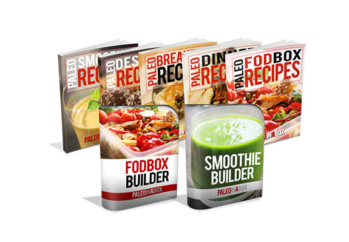

10 - Best Paleo Diet Cookbooks | The Real Paleo And The Paleos Cookery Book.
Tips
THE PALEOS COOKERY BOOKS
Eating Paleo is as hard or easy as having the right recipes to follow. Go into it alone and try to figure it out solo, and you’ll probably crash and burn. Go into it armed with an arsenal of delicious recipes already planned out for you, and in accordance with the Paleo guidelines of what to eat and what not to eat, and your chances of success improve dramatically. Here are the Top 10 Paleo Diet Cookbooks on the planet, so you can get the junk out of your life and start eating real, actual, food.

This is hands down the best Paleo recipe guide you can get for the money, and there isn’t even a close second. It has over 450+ recipes that show you how to cook with all of the wholesome foods you should be eating, and deftly avoids all of the junk that mucks up your system and makes you sluggish and fat. It’s laid out in such a manner that you can clearly see what you’ll need, and how to make it. There’s even an 10 week autopilot meal plan that takes out all of the guesswork to make this caveman simple to follow.
Key Highlights:
- Includes an entirely separate cookbook just for Desserts.
- Includes a 10-week meal plan to use.
- Can access the book on any of your mobile devices.
- Take it for a Risk-Free test spin for 60 days.
Bottom Line: I’m obviously a little biased üòâ But even so, this is my go-to book for paleo recipes, and IMO the best Paleo cookbook available right now. Learn More
Highly Recommended: Caveman Feast
With over 200 recipes, all Paleo friendly, you know you’re in for a treat with the Caveman Feast. All you need to do to get a feel for the type of quality recipes you’re going to get is check out the ones he’s providing for free at his Civilized Caveman site. You can only imagine that he’s saving the best for this compilation, and to sweeten the deal he’s including a series of bonuses that give you plenty of information right from the top authoritative sources on what’s Paleo and what isn’t. So cut out all of the contradictory information and get down to the real meat, literally and figuratively.
Key Highlights:
- Covers 8 different categories including breakfasts and side dishes.
- Uses no grains, potatoes, dairy, refined sugar, or preservatives.
- These recipes give you more energy, and help you lose weight.
Bottom Line: This is a great book to have in your corner as you do the Paleo Diet. Learn More
Honorable Mention: Paleo Hacks
Here are more than 200 recipes you can have at your side as you venture into Paleo and determine what it is you’re supposed to be eating. You can expect leaner muscles while eating these meals, as well as more energy and more mental clarity, all without having to suffer through hunger pangs and cravings like you get with a diet. That’s because they remind you that Paleo isn’t really a diet at all, and with the sort of meals they have you making here you won’t feel like you’re missing out on anything. Quite the opposite, you’ll actually feel like you’re indulging.

Key Highlights:
- A 30 day jumpstart guide so you know exactly what to eat.
- Shopping list included so you know what to buy.
- How to dine out and still be a Paleo follower.
Bottom Line: A comprehensive kit that covers all of your Paleo bases. Learn More
Other Great Paleo Cookbooks
1,000 Paleo Recipes
Our ancestors didn’t have 1,000 recipes from which to choose, so it should be far easier for you to eat Paleo than it was for them. This suite of recipe books is pretty extensive, with hundreds of recipes in different categories like fish, red meats, pork, appetizers, and even organ meats. It’s a way to get a solid grounding on what you should be making for yourself, while at the same time giving you quite the database of recipes to select from. They say these recipes will help you burn fat, perform better cognitively, and even slow down the aging process. These meals can be prepared quickly and easily, so you won’t spend all day in the kitchen.

Key Highlights:
- Step by step instructions walk you through preparation.
- Access collection on smartphones and tablets.
- Comes with a Quick Start guide so you can begin Paleo today.
Gather
This book is particularly geared towards entertaining friends and family with stunning Paleo meals that they might not even know are Paleo. The typical problem presents itself that you want to entertain, but you don’t want to sacrifice your progress by eating a bunch of foods that aren’t Paleo friendly. The answer is to cater your own Paleo approved foods, and this recipe guide shows you how to make foods that everyone will enjoy, regardless of whether or not they share your Paleo philosophy. It has everything from a full dinner party to just a casual get together. Become a master Paleo host with this guide.
Key Highlights:
- Pictures display the meals in detail so you can see how they’ll look.
- Instantly available on Kindle.
- Highly rated and reviewed, with praise for the quality of the recipes and instructions.
Bottom Line: Don’t think of hosting a Paleo party without this book by your side. Learn More
Nom Nom Paleo
This book features over 100 different Paleo recipes and if you don’t like a stuffy cookbook, this is the one to go with. It has a humorous style that will keep you smiling while you cook, and makes the process that much more fun. There is a whopping 288 pages for you to explore, so chances are you won’t be short on recipes for any type of meal you’d want to cook up. If you’ve ever wondered how to make your Paleo meals taste as good as possible, or how to maximize the effectiveness of the time you spend in the kitchen, you’ll be happy with the tips, tricks, and ideology of this Paleo chef.
Key Highlights:
- Shows you how to stock your kitchen for Paleo success.
- Explains how to feed your kids according to Paleo guidelines.
- Author has a best-selling iPad Paleo app with lots more recipes.
Bottom Line: A fun Paleo cookbook that is also a good read with lots of helpful information. Learn More
Summer Eats
The Summer Eats collection of recipes is unlike anything we’ve seen in the world of Paleo. These are like gourmet meals done in Paleo fashion, so you’ll feel like you’re getting well-fed, but keeping healthy at the same time. She’s gone for quality over quantity, so you won’t be inundated with hundreds of recipes, and in fact she’s providing just 16 recipes designed to knock your socks off. This is the type of recipe collection you’ll want to have on hand when you want a special meal, but don’t want to veer off your Paleo plan. She also provides recipes for clean cocktails, so you can enjoy a tasty beverage without packing on the calories and sugar.
Key Highlights:
- Includes video training so you can get results just like hers.
- Exclusive access to future recipes as they are released.
- Newbie friendly.
Bottom Line: When you want to take Paleo to a gourmet level, this is how. Learn More
Paleo Power Lunch
Fill the lunchtime void with delicious Paleo lunches that will have you powering through your afternoons with no sluggishness or brain fog. Lunchtime often becomes no man’s land if you don’t have time to pack a lunch, or your lunch plans get changed unexpectedly. You might find yourself grabbing whatever’s available, which is usually pre-packaged, processed foods that will only contribute to poor health. With the Paleo Power Lunch you’ll always be equipped with the fuel you need to get through the workday in style and without feeling hungry or worn down. Take a meal that usually gets a big question mark and totally hit it out of the park each day. Fix the glitch and you’ll be set all day.
Key Highlights:
- Pack your lunch and snacks in minutes.
- Quick reference guide included.
- Game plan given for how to set up your week for success.
Bottom Line: Fill the midday gap with awesome Paleo lunches that are fast and easy. Learn More
Paleo In a Kitchen
This book promises that you won’t be just a caveman following recipes, but that you’ll actually learn how to cook with the information they provide. It would be nice to become something of a master at cooking Paleo dishes, and with the simple, high-quality ingredients you find on the Paleo approved foods list there’s no reason why you can’t accomplish this goal. This is billed as a Paleo cooking masterclass, so you can get comfortable with the idea of cooking your own awesome foods, and leaving doubt and hesitation behind. Get the notion that Paleo is easy to follow by getting a crash course in how to do it right.

Key Highlights:
- Builds confidence to cook meals from scratch.
- Shows you how to make delicious recipes to oust your old boring ones.
- Saves you money by showing you the best ingredients to buy for less.
Bottom Line: This book is for you if you really want to immerse yourself in Paleo cooking. Learn More
Practical Paleo
You’ll get over 120 recipes in this highly rated book that shows you how to cook up Paleo food for you as well as your family. If you’ve ever wanted a “diet” where you don’t have to count calories, or eat specially labeled diet foods, Paleo is the way to go and this book is the way to get started. It has information that has been peer reviewed and time tested and is sure to teach you at least something about Paleo that you didn’t know. The recipes are laid out in a manner that is easy to follow, so you’ll be sure to stick with it and learn the right way to do things.
Key Highlights:
- - 30 Day meal plan makes this incredibly easy to follow.
- - Tear out guides put the information right where you need it for easy access.
- - Instantly available on your Kindle or Kindle-enabled device.
Bottom Line: A solid book to give you a grounding in what it means to cook and eat Paleo. Learn More